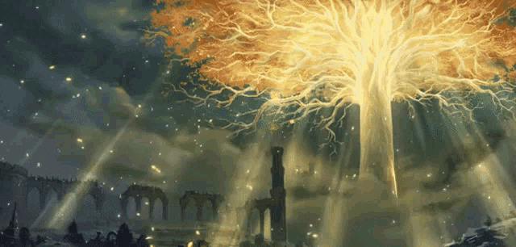
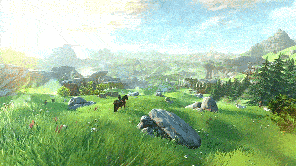
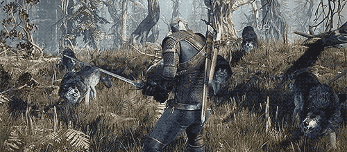
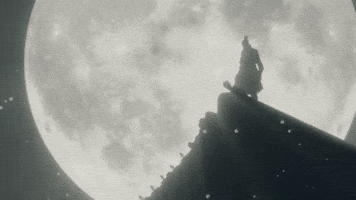

Mi Galería de Videojuegos
Inicio
Galería
Contacto
Galería de Videojuegos
Explora una selección de videojuegos populares
Detalles del Videojuego: Elden Ring

Características Especiales
Mundo abierto interconectado con narrativa.
Combate desafiante y personalización de clases.
Influencia de George R.R. Martin en la narrativa.
Requisitos mínimos
Procesador: Intel Core i5-8400 o AMD Ryzen 3 3300X.
RAM: 8 GB.
Almacenamiento: 60 GB.
Opiniones
"Es como si Dark Souls se fusionara con Skyrim. Brutal en todos los sentidos."
"El combate es un reto constante, pero cada victoria se siente épica."
Detalles del Videojuego: GTA San Andreas
Características Especiales
Extenso mapa inspirado en California.
Personalización de vehículos, ropa y habilidades.
Sistema de pandillas y respeto.
Requisitos mínimos
Procesador: 1 GHz Pentium III o AMD Athlon.
RAM: 256 MB.
Almacenamiento: 3.6 GB.
Opiniones
"El rey de los sandbox clásicos, sigue siendo un viaje nostálgico."
"CJ y Grove Street marcaron mi infancia gamer. Un clásico atemporal."
Detalles del Videojuego: Zelda BOTW

Características Especiales
Mundo abierto con física avanzada e interacciones ambientales.
Diseño no lineal que fomenta la exploración.
Complejas mecánicas de supervivencia.
Requisitos mínimos
Plataforma: Nintendo Switch.
Requiere consola o emulador de PC con hardware potente.
Opiniones
"Cada rincón es una aventura en sí misma. Libertad total para explorar."
"Es como si te dieran un juguete y te dijeran: 'Haz lo que quieras'. Maravilloso."
Detalles del Videojuego: Red Dead Redemption II
Características Especiales
Mundo abierto hiperrealista basado en el Viejo Oeste.
Narrativa rica con personajes complejos.
Sistema moral que afecta el desarrollo de la historia.
Requisitos mínimos
Procesador: Intel Core i5-2500K o AMD FX-6300.
RAM: 8 GB.
Almacenamiento: 150 GB.
Opiniones
"Una obra maestra. Es como vivir en un western de Sergio Leone."
"Arthur Morgan es uno de los mejores personajes que ha dado el gaming."
Detalles del Videojuego: The Witcher III

Características Especiales
Historia inmersiva basada en los libros de Andrzej Sapkowski.
Extensos mapas abiertos con una variedad de ecosistemas.
Combate dinámico con alquimia y hechicería.
Requisitos mínimos
Procesador: Intel Core i5-2500K o AMD Phenom II X4 940.
RAM: 6 GB.
Almacenamiento: 35 GB.
Opiniones
"El mejor RPG de fantasía, no hay discusión."
"Las elecciones importan, y el mundo responde a tus acciones de forma orgánica."
Detalles del Videojuego: Sekiro

Características Especiales
Sistema de combate basado en posturas y parry.
Sigilo como opción estratégica.
Ambientación en el Japón del período Sengoku.
Requisitos mínimos
Procesador: Intel Core i3-2100 o AMD FX-6300.
RAM: 4 GB.
Almacenamiento: 25 GB.
Opiniones
"Desafiante, pero recompensa la paciencia y la precisión."
"El combate es como un baile mortal. Difícil pero gratificante."
Detalles del Videojuego: Hades
Características Especiales
Rogue-like con una narrativa progresiva.
Combate rápido y dinámico.
Estilo visual vibrante y banda sonora épica.
Requisitos mínimos
Procesador: Dual Core 2.4 GHz.
RAM: 4 GB.
Almacenamiento: 15 GB.
Opiniones
"Nunca pensé que un rogue-like podría tener esta narrativa."
"Cada muerte me hace querer más. Es adictivo."
Detalles del Videojuego: God of War: Ragnarök
Características Especiales
Narrativa épica basada en la mitología nórdica.
Combate visceral con enfoque en el hacha Leviatán.
Gráficos espectaculares y evolución de los personajes.
Requisitos mínimos
Plataforma: PS4 o PS5.
Requiere la consola con las actualizaciones más recientes.
Opiniones
"Kratos nunca había sido tan humano, y la mitología nórdica nunca había sido tan espectacular."
"La evolución de los personajes es tan importante como el combate."
Detalles del Videojuego: Minecraft
Características Especiales
Creatividad ilimitada con modos de supervivencia y creativo.
Mundo generado proceduralmente.
Multijugador y soporte de mods.
Requisitos mínimos
Procesador: Intel Core i3-3210 o AMD A8-7600.
RAM: 4 GB.
Almacenamiento: 1 GB.
Opiniones
"Un sandbox que no tiene límites. Perfecto para todas las edades."
"Siempre hay algo nuevo que construir o explorar. Un clásico que no pasa de moda."